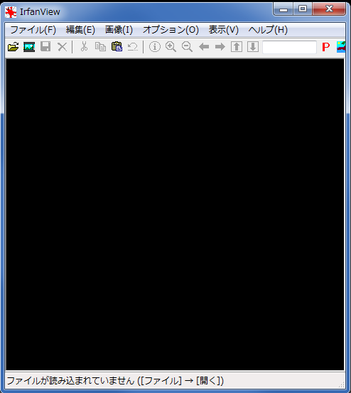
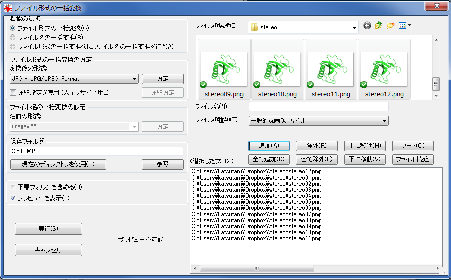
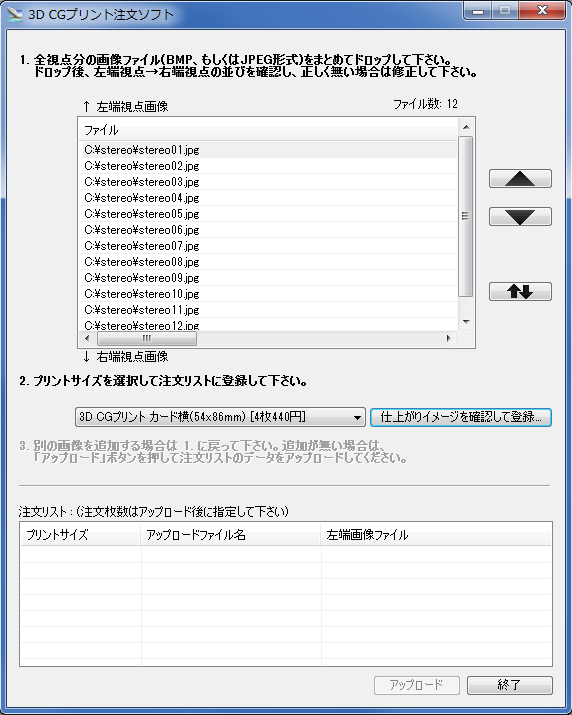
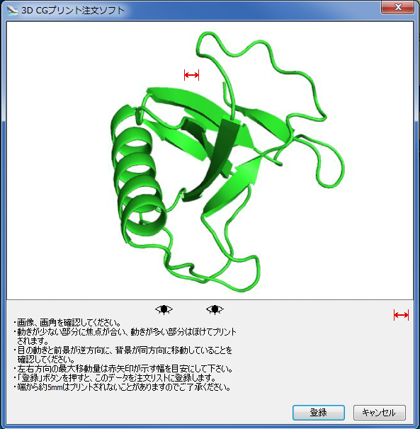
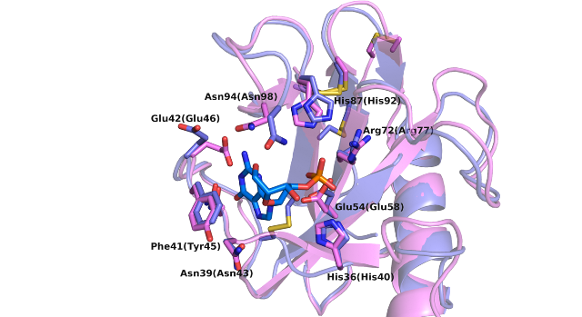
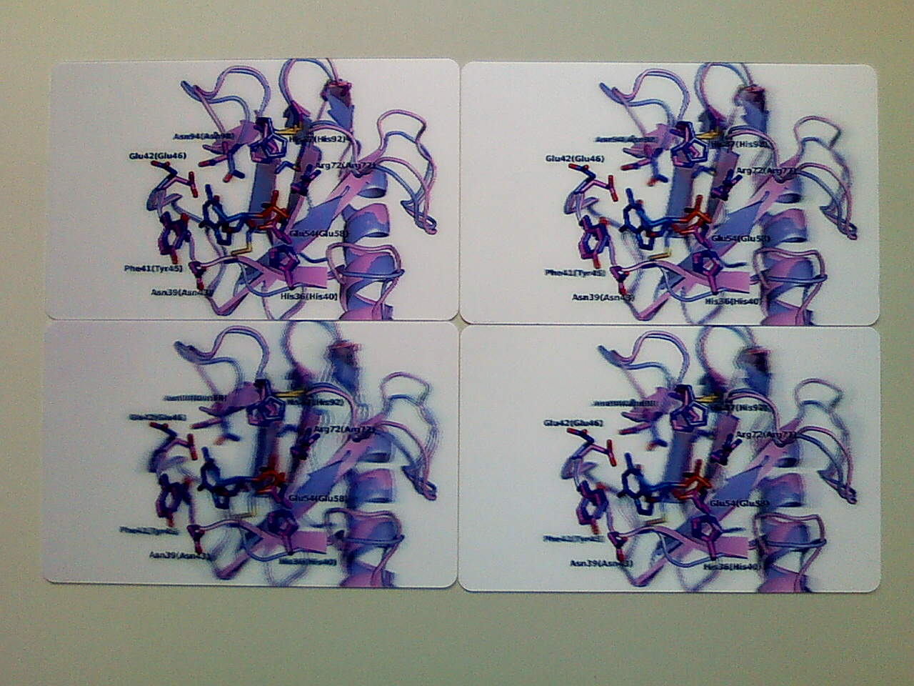
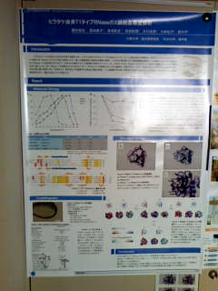
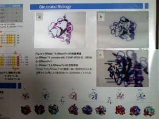

Home > Pymol > 3D CGプリント
12枚視点画像の作成
FUJIFILM 3D CGプリントを使って、裸眼立体視用の図を作ります。- 立体印刷したい図をPyMOLで描きます。
- pmlファイルを保存します。それぞれ0.5度刻み、1度刻み、1.5度刻み、2度刻みのステレオ画像を12枚出力します。 角度に関しては、下のレポート(角度の検証)をご参照ください。 stereo_fullHD_0.5.pml
- File → Runから保存したファイルを開きます。
- 左端視点から右端視点までの12視点の図が出力されます。
stereo_fullHD_1.0.pml
stereo_fullHD_1.5.pml
stereo_fullHD_2.0.pml
PNG形式 → JPEG形式
出力されたPNG形式の画像をまとめてJPEG形式の画像に変換します。- IrfanView32をダウンロードします。
- IrfanViewを開きます。
- 画像の一括変換 ファイル → 一括変換 形式/名前

機能の選択→ファイル形式の一括変換
ファイル形式の一括変換の設定→JPG - JPG/JPEG Format
に設定し、12枚のファイルをまとめて選んで"追加"をクリックし、"実行"をクリックします。 
3D CGプリント注文ソフト
- ダウンロード&インストール FUJIFILM 3D CGプリント の下にある3D CGプリント注文ソフトをダウンロード＆インストールします。
- 注文 変換した12枚のJPEG画像をドラッグ＆ドロップで注文ソフトに追加し、 上(↑左端視点画像)から下(↓右端視点画像)に昇順に並んでいることを確認て"仕上がりイメージを確認して登録"をクリックします。 
"登録"をクリック

最後にアップロードをクリックすると、ブラウザで注文画面が開かれるので、必要事項を入力して注文します。
レポート(角度の検証)
角度の検証のため、0.5、1.0、1.5、2.0刻みの図を作成し、注文しました。検証のためカードサイズ（85.6×54mm）です。ちなみに4枚1セットで440円でした。今回使用した図はこちらです。

水曜日の夜に注文したのですが、月曜日の夕方には発送されていました。
左上から右回りに、0.5、1.0、1.5、2.0刻みの完成品です。(写真では立体感は伝わりませんが・・・) 
さて、結果ですが・・・
まとめですが、細部まできれいな図にしたい場合は0.5度、立体を強調したい場合は1度といった感じです。 0.5度から1度の間で角度を振りたかったところですが、今回の検証は以上です。
0.5度から1度のスクリプトも置いておきます。
stereo_fullHD_0.5.pml
stereo_fullHD_0.6.pml
stereo_fullHD_0.7.pml
stereo_fullHD_0.8.pml
stereo_fullHD_0.9.pml
stereo_fullHD_1.0.pml
レポート(ポスター)
2Lサイズ（127mm x 178mm）で図を印刷して、実際にポスターに貼ってみました。 
全体構造のリボン図を1度刻み、側鎖を表示した拡大図を0.8度刻みで発注しました。割ときれいに印刷できていると思います。
ポスターに使ってみて気づいたことですが、図が目線の高さにないとぼやけてしまいます。今回は低すぎて中腰にならないと きれいに立体的には見えませんでした。図を高い位置に置く必要がありそうです。
PyMOL
- インストール
- 基本操作
- コマンドの基本
- 作図に役立つコマンド+α
- 静電ポテンシャルの表示
- 疎水性度の表示
- 保存度による色分け
- 3DCGプリント
- ラベル
- 分子の重ね合わせ
- 水素結合
- 距離の測り方
- カメラ方位
- リガンド結合部位の表示
- 電子密度マップ mesh
- 電子密度マップ volume
- 電子密度マップ FFT
- ボール&スティックモデル
- cavityの表示
- pocketの表示
- 相互作用部位の表示
- 動画の作り方 GUI編
- 動画の作り方 コマンド編
- 二次構造の割り当て（DSSP）
- 透明
- 温度因子
- 点変異の導入
CCP4mg
3Dプリンター
おうちでできる構造解析
- 概要
- インストール & 準備
- iMosflm
- SCALA
- Matthews係数
- 分子置換モデル
- HKL2000 概要
- HKL2000
- HKL2000 scalepack2mtz
- 空間群の決定
- HKL2000 ログを読む
その他
- 保存度による色分け
(chimera編) - Excelでまとめる
アライメント - PowerPoint
オリジナルテンプレート - アニメーションGIFの
作り方 giam編 - アニメーションGIFの
作り方 ImageMagick編 - 初めてのPDB登録